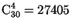

a) The sports club has 30 members, of which four people are required to participate in the 1,000 metre race. How many ways can this be done?
b) How many ways can I build a team of four people to participate in the relay race 100 m + 200 m + 300 m + 400 m?
Nothing to translate.
a) ; b) $30 \times 29 \times 28 \times 27$ = 657720 methods.